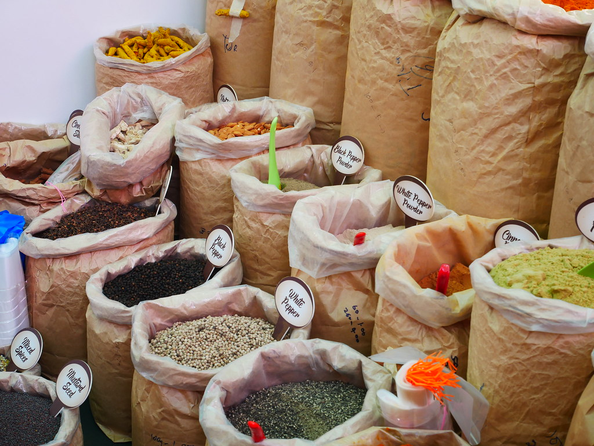
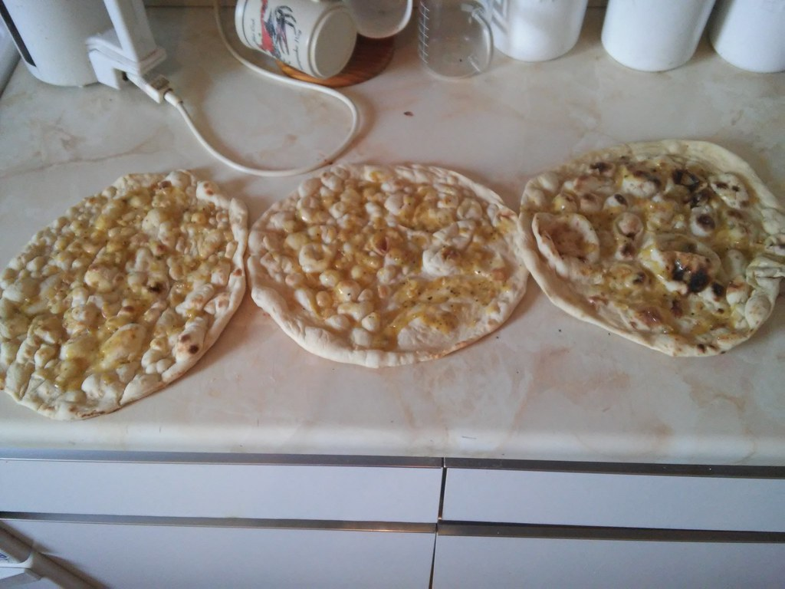
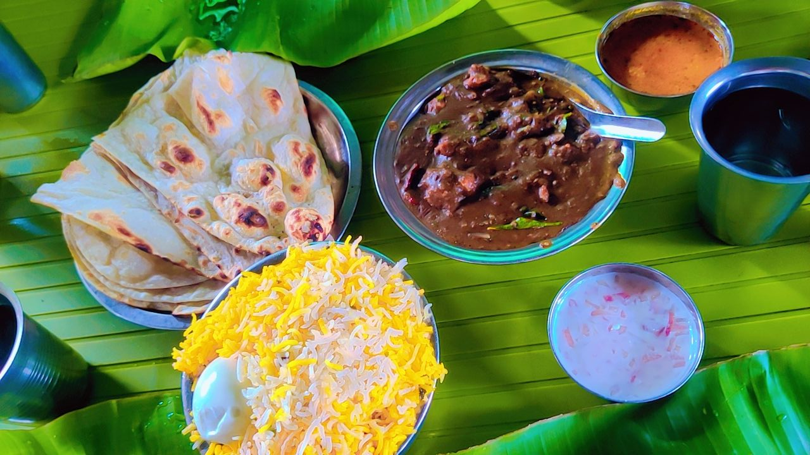

なぜ寄り道の価値があるのか
国道からちょっと入るだけで、
世界が変わる。
「インド料理 ディヨ」は、国道6号から少し入った場所にあります。
大きな看板が目立つ通り沿いのお店ではありません。
けれど、一度足を運んだ方の多くが「また来たい」「わざわざでも来る価値がある」と言ってくださいます。
実際に寄せられた声から、その理由をご紹介します。
-
1

スパイスのイメージ たまたま通りかかって、入ってみた。
「たまたま通りかかって入ったお店」と語る方が、3種のカレーを一度に楽しめるセットを注文。バターチキンとほうれん草マトンは、インド・ネパール料理店では定番の味わいながら「基本的な料理の腕がしっかりしていると、ここまで美味しくなるのか」と驚かれたそうです。
「基本的な料理の腕がしっかりしていると、ここまで美味しくなるんだとびっくりしました」というお声をいただきました。
-
2

ナンのイメージ 都内の有名店も含めて、食べ歩いた結論。
星の数ほどあるインド・ネパール料理店。都内の有名店を含めて数多く食べてきたという方が、「やっぱり20年以上続いている地元の老舗が一番」と思っていたところに出会ったのが、当店のチキンティッカマサラでした。
「20年以上続いている地元の老舗が一番だと思っていましたが、ついに超えてしまいました」というお声をいただきました。
-
3

カレーとナンのイメージ 後日、わざわざ寄り道してテイクアウト。
あまりの美味しさに、その方は後日、国道6号からわざわざ寄り道をしてテイクアウトし、ご家族に食べさせたそうです。結果は大評判。「寄り道までしていく価値がある」という言葉をいただきました。
「6号からわざわざ寄り道してテイクアウトして家族に食べさせてあげました。大評判でした。寄り道までしていく価値ありです」というお声をいただきました。